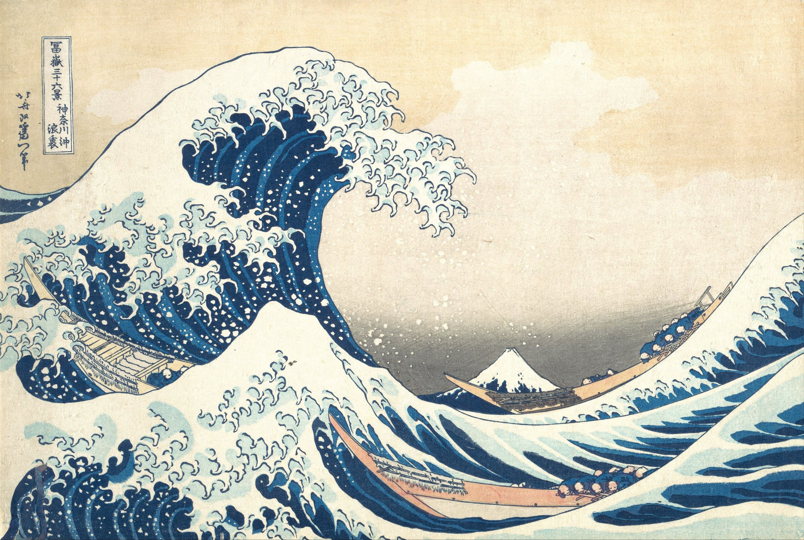
Sean Cowan
AI Powered Strategy, User Experience and Creative Direction
Like Hokusai's iconic wave, my design and business philosophy harmonizes traditional principles with the dynamic currents of digital transformation.
About
Digital work that people want to use, and that moves the business it was built for.
Born and raised in Baltimore, Maryland, I came to Columbus, Ohio for the Columbus College of Art & Design and never left the city's digital advertising and marketing community, where I've been lucky to work with and for some very good people.
Today I'm Director of Digital Experience at The Shipyard / Fahlgren Mortine, leading strategy, UX architecture and creative direction for the kind of clients on this page. The brief is always the same underneath: build tools, not toys, make something people want to use, make sure it earns its keep, and share what we learn so the next project starts further ahead.
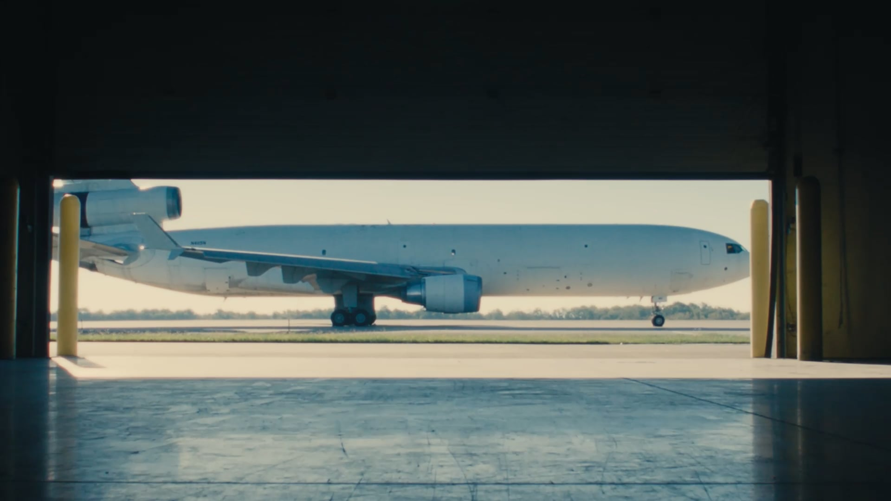
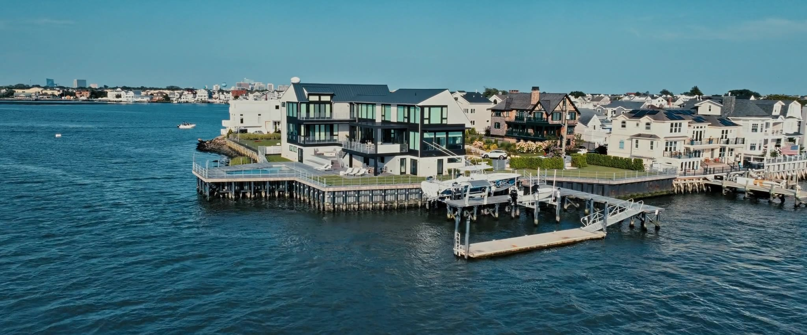
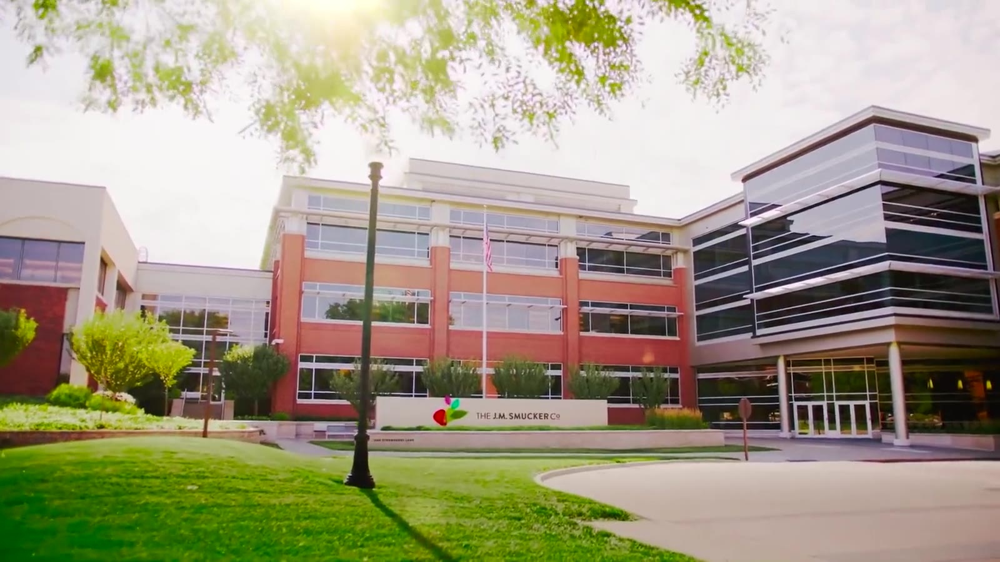
Ohio's economic-development platform: the site that sells the state to companies deciding where to build, hire and invest.
ViewThe website for the FRP infrastructure leader, rebuilt so engineers can find the product, the spec and the support they came for.
ViewThe corporate home for a newly independent company, built for investors, media, associates and customers around People, Product and Planet.
ViewA corporate site that tells the story of a Fortune 500 family company behind 40+ brands, and recruits for its Orrville headquarters.
ViewArchive projects
Earlier work: apps, sales tools and experiences that put a product in someone's hands before the sale.
Configurators, patient education, VR pilots and trade-show tools. Smaller briefs, same approach: build something people want to use, and make sure it earns its keep.
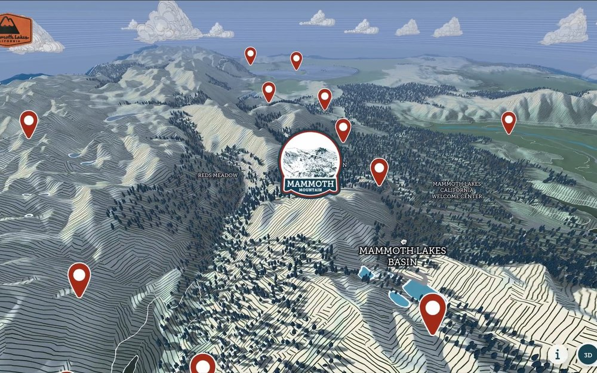
Certified Unreal · Mammoth Lakes
An interactive 3D map that takes visitors to the 17 geological wonders behind Mammoth Lakes Tourism's Certified Unreal campaign.
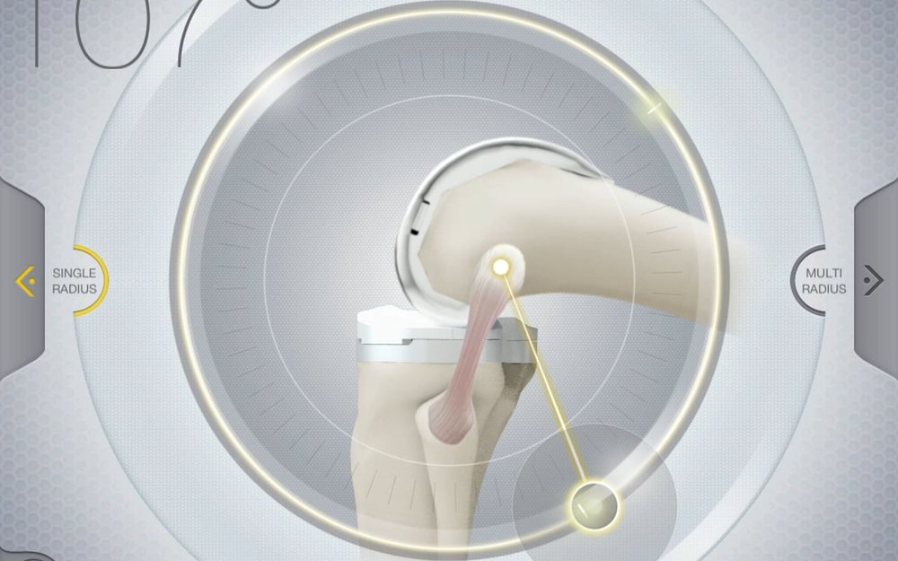
Stryker Knee
A patient-education iPad app that made the case for a dual-radius knee implant.
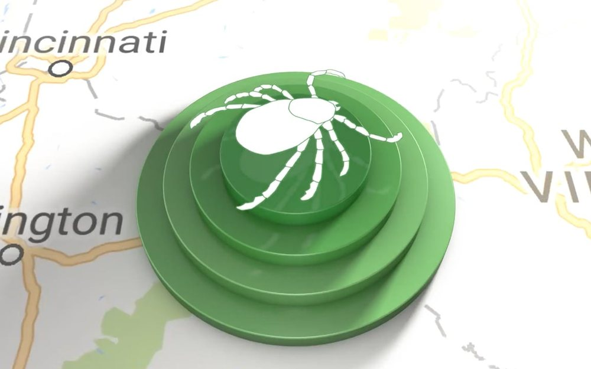
TickTracker
Brand, UX and UI for a crowdsourced tick and Lyme disease tracking app.
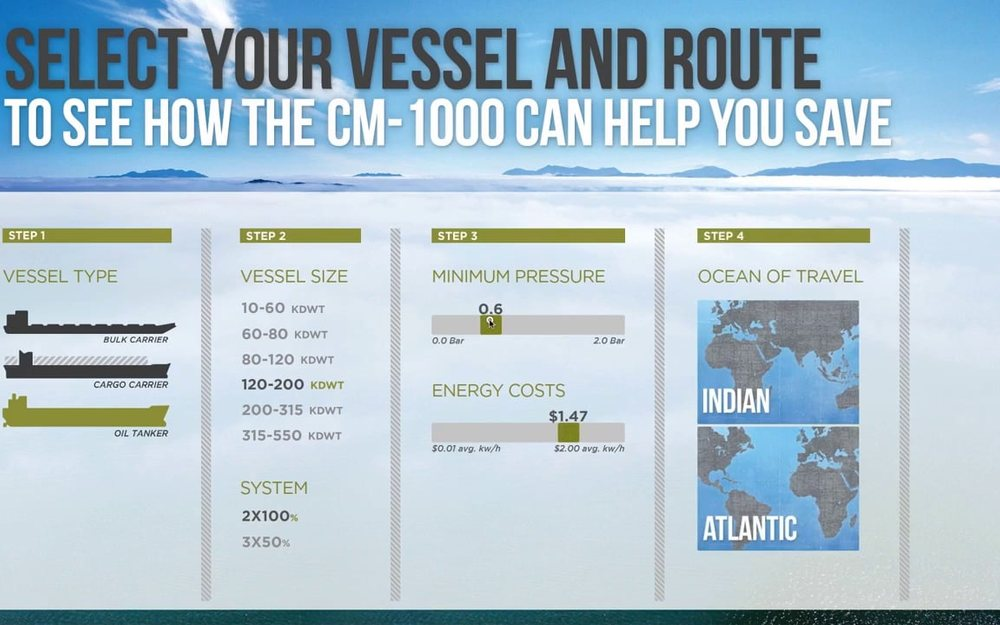
CM1000 Sales Tool
An interactive cost calculator fed by live NOAA data for a new marine pump technology.
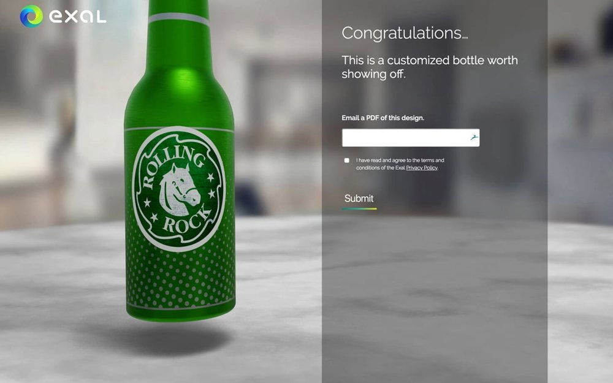
Exal Visualizer
A browser-based configurator that puts a prospect's brand on Exal's aluminium bottles.
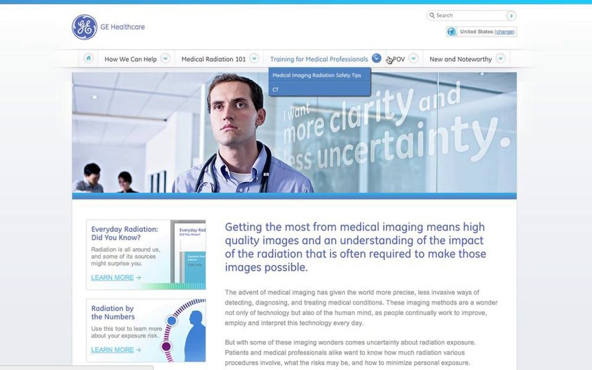
GE Healthcare
Interactive infographics that put everyday and medical radiation exposure on one scale.
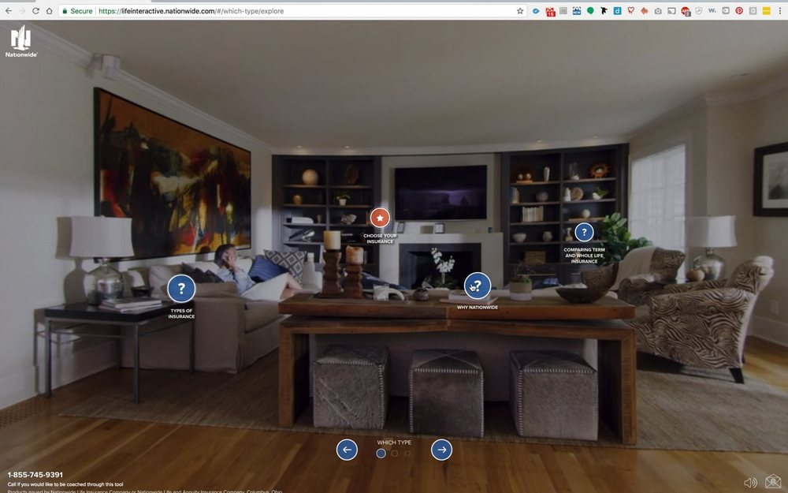
Nationwide Life
A split-tested 360° video and browser VR pilot for life insurance conversion.
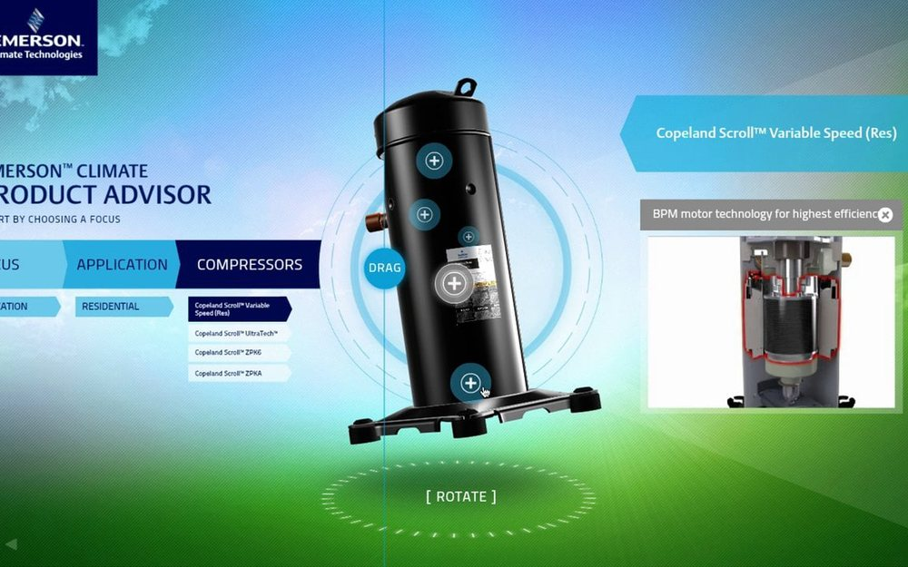
Trade Show Experiences
Kiosks, virtual booths and lead-scoring sales aids for Emerson, Avery Dennison, Cooper Tire and Colfax.
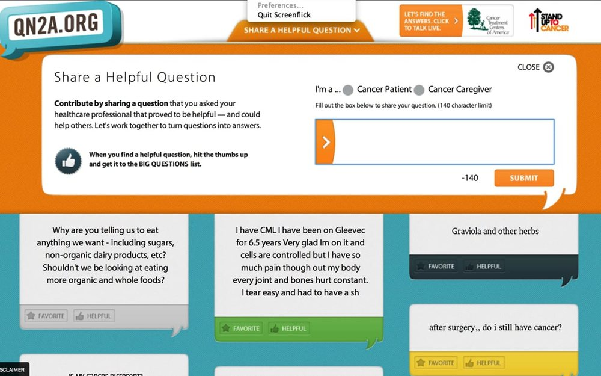
QN2A · Stand Up To Cancer
A community site where cancer patients shared the questions they wish they'd asked.